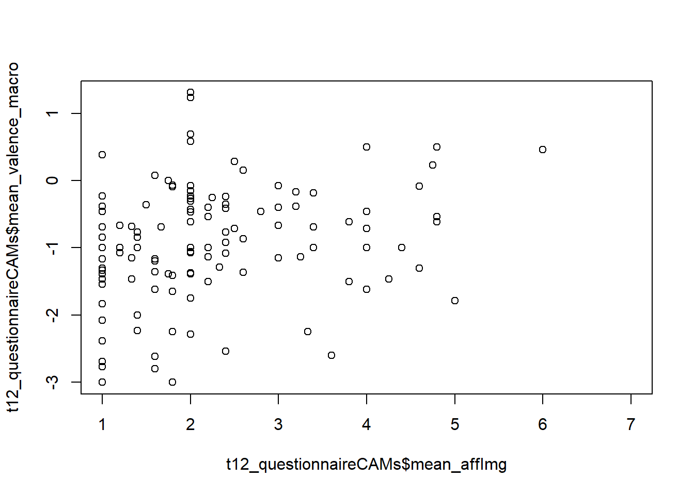

## global variables: Merge Files from t1, t2
Notes
prepare data
load pre-processed data
# sets the directory of location of this script as the current directory
# setwd(dirname(rstudioapi::getSourceEditorContext()$path))
# load packages
require(pacman)
p_load('tidyverse', 'jsonlite', 'magrittr', 'xlsx',
'stargazer', 'psych', 'jtools', 'DT', 'ggstatsplot',
'lavaan', 'igraph',
'regsem', 'MplusAutomation')
# load data
setwd("data")
t1_questionnaire <- readRDS(file = "t1_questionnaire_final.rds")
t2_questionnaireCAMs <- readRDS(file = "t2_questionnaireCAMs.rds")
CAM_data <- vroom::vroom(
file = "CAMspiracy_data_fixed.txt",
delim = "\t",
show_col_types = FALSE,
col_names = FALSE)$X1
CAM_nodes_clean <- vroom::vroom(
file = "CAM_nodes_clean.txt",
delim = "\t",
show_col_types = FALSE,
col_names = TRUE)
# load functions
setwd("../../functions")
for(i in 1:length(dir())){
# print(dir()[i])
source(dir()[i], encoding = "utf-8")
}
setwd("../functions_CAMapp")
for(i in 1:length(dir())){
# print(dir()[i])
source(dir()[i], encoding = "utf-8")
}
rm(i)
# save CAM data as list
CAM_data_list <- list()
for(i in 1:length(CAM_data)){
if(testIfJson(CAM_data[[i]])) {
CAM_data_list[[i]] <- jsonlite::fromJSON(txt = CAM_data[[i]])
}else{
print("ERROR")
break
}
}
rm(CAM_data)set up CAM data
Create CAM files, draw CAMs and compute network indicators
########################################
# create CAM single files (nodes, connectors, merged)
########################################
CAMfiles <- create_CAMfiles(datCAM = CAM_data_list, reDeleted = TRUE)Nodes and connectors, which were deleted by participants were removed.
# deleted nodes: 217
# deleted connectors: 87CAMfiles[[1]] <- CAMfiles[[1]][CAMfiles[[1]]$participantCAM %in% CAM_nodes_clean$participantCAM, ]
CAMfiles[[2]] <- CAMfiles[[2]][CAMfiles[[2]]$participantCAM %in% CAM_nodes_clean$participantCAM, ]
CAMfiles[[3]] <- CAMfiles[[3]][CAMfiles[[3]]$participantCAM.x %in% CAM_nodes_clean$participantCAM, ]
if(all(CAMfiles[[1]]$id == CAM_nodes_clean$id)){
CAMfiles[[1]]$text_summarized <- CAM_nodes_clean$text_summarized
}
# CAMfiles[[1]][CAMfiles[[1]]$CAM == unique(CAMfiles[[1]]$CAM)[121],]
## fix pre-defined word:
for(i in 1:nrow(CAMfiles[[1]])){
if(CAMfiles[[1]]$text[i] == "climate change" || CAMfiles[[1]]$text[i] == "Climate Change"){
# print(i)
tmp <- CAMfiles[[1]][i,]
if(tmp$value < 0){
CAMfiles[[1]]$text_summarized[i] <- paste0("Climate Change", "_negative")
}else if(tmp$value == 0){
CAMfiles[[1]]$text_summarized[i] <- paste0("Climate Change", "_neutral")
}else if(tmp$value == 10){
CAMfiles[[1]]$text_summarized[i] <- paste0("Climate Change", "_ambivalent")
}else{
CAMfiles[[1]]$text_summarized[i] <- paste0("Climate Change", "_positive")
}
}
}
########################################
# draw CAMs
########################################
CAMdrawn <- draw_CAM(dat_merged = CAMfiles[[3]],
dat_nodes = CAMfiles[[1]],ids_CAMs = "all",
plot_CAM = FALSE,
useCoordinates = TRUE,
relvertexsize = 3,
reledgesize = 1)processing 122 CAMs...
[1] "== participantCAM in drawnCAM"########################################
# draw CAMs
########################################
tmp_microIndicator <- c("Climate Change")
networkIndicators <- compute_indicatorsCAM(drawn_CAM = CAMdrawn,
micro_degree = tmp_microIndicator,
micro_valence = tmp_microIndicator,
micro_centr_clo = tmp_microIndicator,
micro_transitivity = tmp_microIndicator,
largestClique = FALSE)
########################################
# wordlists
########################################
CAMwordlist <- create_wordlist(
dat_nodes = CAMfiles[[1]],
dat_merged = CAMfiles[[3]],
order = "frequency",
splitByValence = FALSE,
comments = TRUE,
raterSubsetWords = NULL,
rater = FALSE
)[1] "create_wordlist - use summarized words"
[1] 1685
[1] 1685
processing 122 CAMs...
[1] "== participantCAM in drawnCAM"DT::datatable(CAMwordlist, options = list(pageLength = 5)) merge data
## remove network indicators
t2_questionnaire <- t2_questionnaireCAMs[, -c(47:78)]
## remove deleted CAMs
t2_questionnaire <- t2_questionnaire[t2_questionnaire$PROLIFIC_PID %in% CAM_nodes_clean$participantCAM,]
if(all(t2_questionnaire$PROLIFIC_PID == networkIndicators$participantCAM)){
print("all t2 data can be matched")
t2_questionnaireCAMs <- cbind(t2_questionnaire, networkIndicators)
}[1] "all t2 data can be matched"if(all(t2_questionnaireCAMs$PROLIFIC_PID %in% t1_questionnaire$PROLIFIC_PID)){
print("all t1, t2 data can be joined")
t12_questionnaireCAMs <- left_join(x = t1_questionnaire, y = t2_questionnaireCAMs, by = "PROLIFIC_PID")
}[1] "all t1, t2 data can be joined"check for plausiblity
plot(t12_questionnaireCAMs$mean_affImg, t12_questionnaireCAMs$mean_valence_macro)
cor(t12_questionnaireCAMs$mean_affImg, t12_questionnaireCAMs$mean_valence_macro, use = "pairwise")[1] 0.2517511save data
setwd("outputs")
# save questionnaire
## save as .xlsx file
xlsx::write.xlsx2(x = t12_questionnaireCAMs, file = "t12_questionnaireCAMs.xlsx")
## save as .csv file
write.csv2(x = t12_questionnaireCAMs, file = "t12_questionnaireCAMs.csv")
## save as R object
saveRDS(t12_questionnaireCAMs, file = "t12_questionnaireCAMs.rds")
# save CAMfiles combined and clean
saveRDS(CAMfiles, file = "CAMfiles.rds")
# save drawn CAMs
saveRDS(CAMdrawn, file = "CAMdrawn.rds")
# save network indicators
## save as .xlsx file
xlsx::write.xlsx2(x = networkIndicators, file = "networkIndicators.xlsx")
## save as R object
saveRDS(networkIndicators, file = "networkIndicators.rds")
# save wordlist
xlsx::write.xlsx2(x = CAMwordlist, file = "CAMwordlist.xlsx")